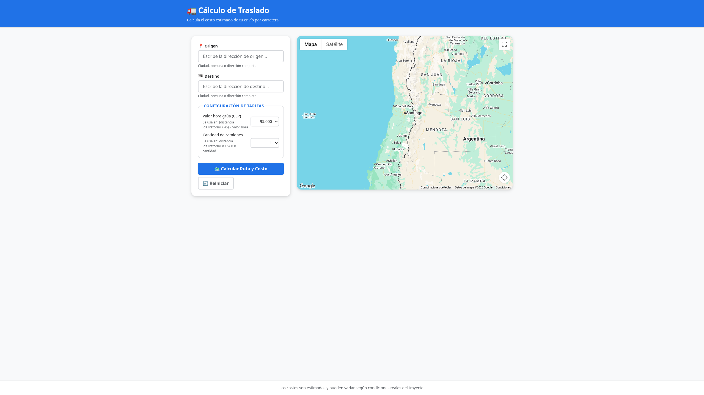
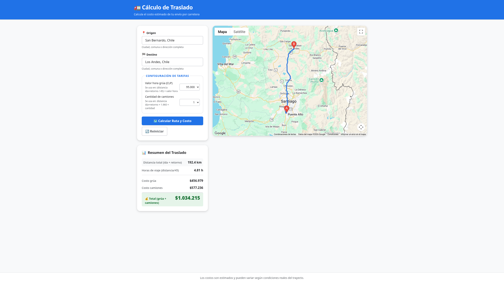

Web
Cálculo Traslado
Sistema web para calcular costos estimados de transporte de carga en camión con ruta en mapa interactivo.
Ver código en GitHubProblema
Calcular costos de transporte de carga en camión entre localidades es un proceso manual propenso a errores: depende de distancias variables, tarifas por kilómetro, horas de viaje y costo de grúa. No existe una herramienta simple que integre mapas interactivos con una fórmula de costos clara y parámetros configurables como valor hora grúa y cantidad de camiones.
Qué se construyó
Aplicación web que integra Google Maps JavaScript API con Directions API para seleccionar origen y destino, trazar la ruta y calcular la distancia total. Aplica la fórmula: distancia redonda × 2, horas de viaje (distancia / 40 km/h), costo grúa (horas × valor hora), costo camiones (distancia total × $3.000 × cantidad de camiones), y costo total. Los parámetros de valor hora grúa y cantidad de camiones son configurables desde la interfaz. La API key se protege mediante función serverless en Vercel.

